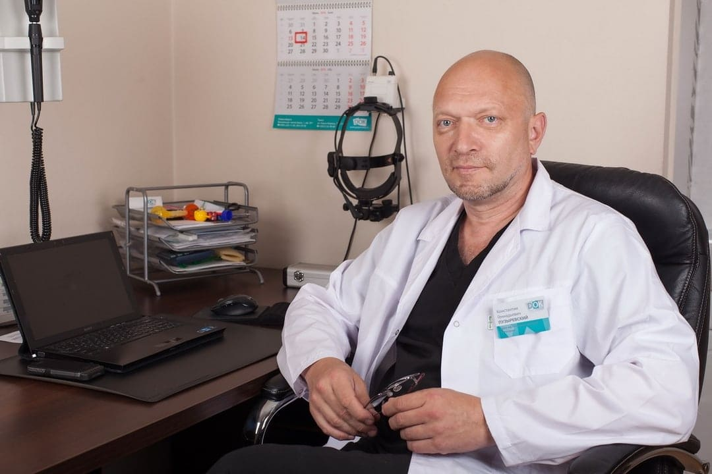

Aproape că am orbit. Ecaterina Balan, în vârstă de 93 de ani, a spus cum a putut evita
intervenția chirurgicală cu cataracta avansată.
Ecaterina Balan nu a așteptat un număr mare de oaspeți la ziua ei de naștere de 93 de ani.
Trăiește singură de ani de zile. Singura fiică Hristi a murit 16 ani în urmă. Nepoții și strănepoții trăiesc
departe.
În 93 de ani, Ecaterina Balan se simte foarte tânără. Cu câțiva ani în urmă, a reușit să
scape de cataracta care a chinuit-o de 45 de ani! Cum a reușit? Cea mai vârstnică persoană și-a împărtășit
secretul cu corespondentul nostru.
"De mai mulți ani, pot vedea din nou și lucra în grădină. Țin animale - iepuri, găini»
- Corespondent: Ecaterina Balan, principala întrebare - cum mențineţi un astfel de
optimism, sănătate, energie, chiar și de grădină aveţi grijă la o vârstă atât de venerabilă. Care e secretul
dvs.? - Nu am fost întotdeauna așa persoană. Am lucrat ca profesor de liceu toată viața
mea.
Iar aceasta este o muncă foarte nervoasă și activă. La 48 de ani, am început să văd totul în jur opac, la început
nu foarte puternic, apoi totul vedeam ca prin ochelarii aburiţi, dar apoi am avut în fiecare zi ca și cum aș fi
fost în ceață. S-a dovedit a fi cataracta de vârstă. Specialiștii mi-au prescris picături pentru ochi.
Nici
nu-mi mai amintesc denumirea. Ele au ajutat puțin, dar dacă o dată ai uitat să-ţi pui picăturile, totul s-a
încețoșat din nou. În același timp, am continuat să lucrez, deși atunci mă simțeam deja bătrână. Și
odată
am fost dusă cu ambulanța direct de la școală. Chiar în timpul lecției, lucrurile s-au înrăutăţit atât de mult
încât nu mi-am putut vedea palmele când mi-am întins brațele. Au injectat ceva, mi-au pus un bandaj pe ochi. Am
stat de o lună la spitalul din oraş. Când bandajul a fost scos, am putut vedea din nou, dar încă opac. Apoi am
fost externată, și trimisă la specialist. La picăturile deja existente, el a prescris altele. După cum
îmi
amintesc acum, în fiecare zi picuram 6 picături. Am cheltuiut o mulțime de bani pentru a le cumpăra. Am mers la
farmacie ca la un magazin alimentar.
A trebuit să picur mai mult și mai mult. Dar boala nu a trecut de la un astfel de terapie.
Și n-a putut trece. La 68 de ani mi s-a dat al doilea grup de invaliditate.
De fapt, mi s-a spus că nu pot face nimic decât să mențin vederea actuală. Da, am înțeles că
nu pot încă să scap de cataractă.
Probabil că aș fi murit așa. Dacă nu ar fi fost un vechi prieten de-al meu. Fiul său a fost
academician la Institutul de Cercetare al Bolilor oculare, numele lui este Igor. M-am dus la el să-mi facă o
operație la ochi. El m-a convins să nu fac asta: fiecare a 10-a persoană după operație la ochi își
pierde
COMPLET VEDEREA, FĂRĂ POSIBILITATE DE RECUPERARE! Mi-a spus că cataracta apare în principal din cauza defalcării
proteinelor în cristalinul ochiului, și dacă restabiliți proteinele cristalinului, puteți să restabiliți vederea
100% la orice vârstă. În acel moment, tocmai au fost efectuate studii în Israel și s-au învățat să
restabilească proteinele cristalinului. Atunci Igor mi-a propus să iau un curs. Rezultatul a fost
uimitor.
Timp de 4 săptămâni, vederea a revenit complet! Nu vă puteți imagina fericirea de a vedea din nou natura,
animalele și fețele! Și cel mai important, nu mai trebuia să cumpăr toate picăturile cele pentru ochi!
- Corespondent: Puteți să-mi spuneți exact cum ați restabilit proteinele
cristalinului? - De fapt, acum este ușor de făcut. Înainte a fost necesar să comandați
ierburi
speciale din diferite țări, pentru a le face tincturi speciale. Acum, acest lucru nu este necesar, iar recuperarea
însăși durează doar 30 de zile! Există un remediu foarte bun, care se numește . Este special
creat
pentru a restabili proteinele cristalinului. Acest remediu treuie luat câte 2-3 capsule în timpul mesei cu un
păhar de apă. Metoda spusă de femeia vârstnică pare într-adevăr eficientă. Este chiar așa? Înainte
de a publica acest material și de a-l face disponibil pentru cititori, am decis să consultăm cu celebrul
specialist în domeniul
oftalmologiei, Ștefan Boeraș

- Corespondent: Ștefan Boeraș, cum credeți restaurarea proteinelor
cristalinului într-adevăr poate preveni orbirea? - Da, într-adevăr e așa. Vederea persoanei
depinde de calitatea și cantitatea proteinelor din ochi. Desigur, Ecaterina Balan a descris toate procesele care
au loc în organism la un nivel primitiv, dar, în general, totul este așa.
- Corespondent: Puteți vorbi despre produsul . Ce
reprezintă? - este un remediu israelian, care este exportat în 18 țări ale lumii,
inclusiv și în țara noastră. La noi, distribuirea acestor capsle este coordonată de Institutul de Cercetare al
Bolilor
oculare. Din câte știu, remediul este creat pe baza acestor produse, cu ajutorul cărora au fost ajutați doar
liderii și elita încă din anii 60. Păi, formula însăși a fost
modificată, în mare măsură, de oamenii de știință, deoarece tehnologiile de astăzi sunt mult mai avansate decât au
fost 50-60 de ani în urmă. În consecință, remediul însuși ajută mai bine decât atunci. Deși de atunci a fost
considerat extrem de eficient și capabil să "facă oamenii sănătoşi". Principalele ingrediente active
din sunt vitaminele B și micronutrienții cu proprietăți antioxidante, principalii nutrienți pentru
funcționarea sistemului de protecție a ochilor împotriva daunelor oxidative, de la razele nocive ale spectrului
albastru al luminii solare.. Aceste substanțe împreună sunt capabile să pătrundă în ochi și să
sintetizeze proteinele pentru cristalin. De fapt, după aceea, ochiul devine ca în 20 de ani Am studiat
acest instrument la Academia de Științe, acesta sintetizează foarte bine proteinele necesare în
săptămânile 2-3 de administrare. Vreau să vă arăt rezultatele acestor studii. În total, 300 de voluntari au
participat la studii.
Cristalinul ochiului a fost restabilit complet - 96% dintre subiecți
Claritatea vederii s-a îmbunătățit - 98% dintre subiecți
Presiunea oculară a revenit la normal - 89% dintre subiecți
Opacifierea în ochi a dispărut - 97% dintre subiecți
În plus față de vitaminele grupei B, conține alte substanţe utile pentru ochi
și vase, macro- și microelemente.
Zinc
Face parte din enzimele care reglează vederea în întuneric și ajută la
adaptarea rapidă la lumină puternică, reducând efectul blițului strălucitor. De asemenea, zincul ajută la
menținerea nivelului de vitamina A (această vitamină ajută la întărirea corneei ochiului și are un efect
pozitiv asupra acuității vizuale).
Riboflavina
Ajută la îmbunătățirea circulației sângelui în vasele oculare, are un
efect pozitiv asupra percepției culorilor și vederii nocturne. Contribuie la funcționarea normală a
cristalinului, prevenind astfel dezvoltarea cataractei. Promovează vindecarea țesuturilor, care este foarte
importantă pentru distrofia corneei.
Cianocobalamina
Ajută la restabilirea circulației sângelui în ochi și la îmbunătățirea
stării fibrelor nervoase ale aparatului ocular. Ajută la calmarea și ameliorarea oboselii ochilor. Ajută la
prevenirea inflamației nervului optic.
Este eficient în întreaga gamă de boli oculare, de la miopie și hipermetropie la glaucom
și cataractă.
Ajută la sindromul vederii la computer (SVC) și consecințele acestuia (elimină durerile
de cap și durerile de spate și gât)
Adică, remediul este complex. Vizează îmbunătățirea completă a sistemului vizual la
vârsta de peste 40 de ani. Important! S-a ajuns la concluzia că acum este cel mai bun moment
pentru a începe cursul împotriva bolilor oculare. Prin stabilizarea temperaturii medii, metabolismul este
accelerat, circulația sângelui în organism crește, fluxul sanguin și oxigenul în organele interne cresc și
efectul consumului de droguri crește. Cursul este cu 67% mai eficient, decât ar fi în alte perioade ale
anului.
- Corespondent: De unde se poate cumpăra și cât
costă? În
termenul desfășurării promoției ( de la 03.02.2021), trebuie să lăsați o
cerere pe site-ul
oficial al vânzătorului. De asemenea, în această perioadă există o reducere de 50%.
Datorită faptului că stocurile de se apropie de sfârșit, producătorul a decis să
termine distribuirea produsului la data de 03.02.2021 (inclusiv).
Comentarii
Anghelina Arnautu
Vă mulțumesc foarte mult pentru acest articol. E foarte relevant pentru mine. Recent, de
multe ori stau la calculator, și vederea se înrăutăţeşte. Am comandat
Nicolae Bibescu
Sunt de acord cu opinia specialiștilor. Remediul este chiar minunat! Înainte de a începe să-l
utilizez, am avut o vedere minus 2 pe un ochi și minus 3 pe celălalt. Acum, pe ambii este minus unu, adică
vederea s-a restabilit aproape complet. Înainte de asta, nimic nu a ajutat la fel de mult ca acest remediu.
Ion Sbârlea
Am comandat. Mi-au promis să livreze într-o săptămână (la Brașov). Când va veni, voi încerca
să scriu despre rezultate.
Liliana Odoroagă
Recent am văzut transmisiune pe TVR-1 despre vedere. Au vorbit despre acolo. Mulți
specialiști l-au recomandat.
Olivia Balanescu
Sunt de acord cu toți cei care au scris. Remediul este foarte bun. L-am luat cu întreaga
familie, cu vederea este rău aproape la toți membrii. Fiecare a avut îmbunătățiri notabile. Fiica s-a
îmbunătățit în general cu 3 unități după un curs, și specialistul a confirmat acest lucru. Suntem foarte
mulțumiți de
remediul "".
Amalia Grosu
Am comandat. Într-adevăr, la promoție se primește destul de ieftin.
Aureliana Ogrezeanu
"" este un remediu destul de bine-cunoscut. Am auzit multe despre el. Chiar
și unii prieteni l-au folosit, l-au lăudat.
Sergiu Ticușan
Scriu despre impresiile mele. Au livrat la timp, așa cum au promis, într-o săptămână
era deja la poștă, unde l-am luat imediat. Și acum cel mai interesant lucru este efectele sale. Am aplicat doar
de o săptămână, dar rezultatele sunt deja vizibile. Vederea se îmbunătățește cu adevărat. Alaltăieri, chiar și
de departe, am văzut numărul autobuzului. Sunt complet mulțumit de remediu. Continuu să-l folosesc. Vă sfătuiesc
pe toți. Cel puțin merită încercat.
Andrei Robaschi
Mulțumesc. Am comandat la promoție. O să încerc să-mi recuper vederea, căci cade din
ce în ce mai mult de-a lungul anilor, mi-e frică să fac operația. Vecinul a făcut-o, a fost chinuit de doi ani.
Totul supurează și nu poate fi învins
Ionelia Râmbetea
Mulțumesc!!
Mărioara Debucean
Întotdeauna în spatele unor lucruri rele sunt mulți bani ... (o cunoscută a făcut o operație
pe ochi anul trecut. De două ori (a fost repetată). Vederea la un ochi a scăzut foarte mult. Pentru mine am
decis - că voi restabili vederea pe cont propriu.
Valentina Urici
Azi am luat coletul de la poștă. Totul e în regulă. A fost livrat repede. S-a primit
într-adevăr la un preţ bun. Am început să-l iau.
Mulțumesc! Trimiterea dvs. a fost primită!
Oops! A apărut o eroare la trimiterea formularului.